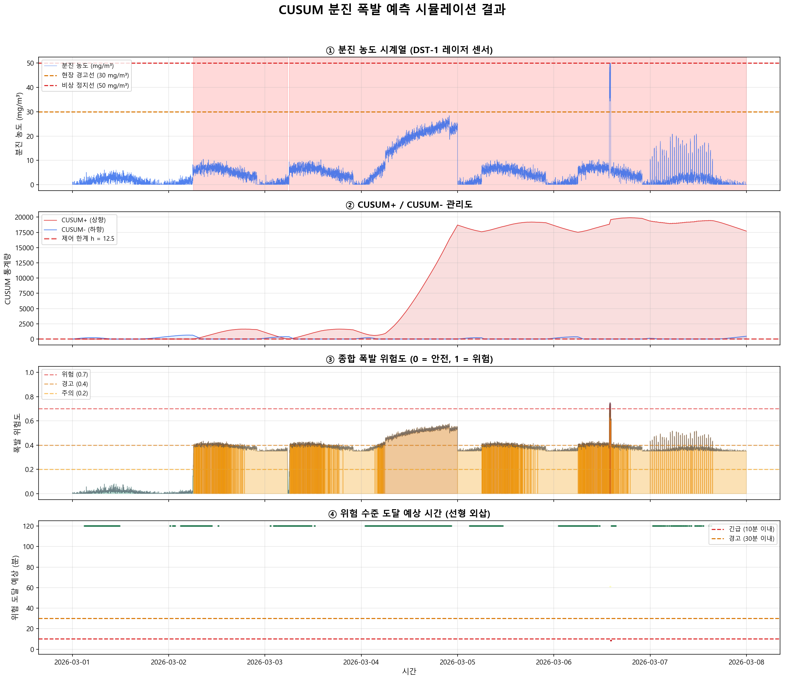

CUSUM 분진 폭발 예측 — 상세 설명
누적합 관리도로 분진 농도의 미세한 상승 추세를 조기에 감지하는 원리
0 CUSUM이란?
매일 체중을 재서 목표 체중과의 차이를 매일 더해가는 것과 같습니다.
하루 0.1kg은 눈에 안 띄지만, 30일 누적하면 3kg — CUSUM은 이런 서서히 쌓이는 변화를 잡아냅니다.
단순 비교("오늘 몸무게 < 80kg? OK!")는 이런 추세를 놓칩니다.
CUSUM은 1954년 E.S. Page가 제안한 통계적 공정 관리(SPC) 기법입니다. Shewhart 관리도가 한 시점의 이상을 감지하는 데 반해, CUSUM은 지속적이고 작은 평균 이동(shift)을 빠르게 감지합니다.
"현재 값이 정상인가?"가 아니라, "누적된 편차가 우연으로 설명되는 범위를 벗어났는가?"를 판단합니다.
Shewhart vs CUSUM 비교
Shewhart 관리도 (단순 비교)
- "현재 값 > 한계치?" 만 확인
- 큰 이상만 감지 (1.5σ 이상 변화)
- 점진적 상승을 놓침
- 과거 이력을 전혀 보지 않음
CUSUM 관리도 (누적합)
- 편차를 누적하여 추세 감지
- 0.5σ ~ 1.0σ의 작은 변화도 감지
- 서서히 올라가는 위험도 조기 포착
- 과거 전체 이력이 반영됨
1 분진 폭발 위험 — LEL 개념
공기 중에 부유하는 가연성 미세 분진이 점화원에 의해 급격히 연소하는 현상입니다. 밀폐 공간에서는 폭발적 압력 상승이 발생하여 설비 파손과 인명 피해를 초래합니다.
폭발 오각형 — 5가지 동시 조건
(가연성 분진)
(공기 중 O2)
(스파크/마찰열)
(공기 중 부유)
(압력 축적)
LEL (Lower Explosive Limit, 하한폭발한계)
폭발이 가능한 최소 분진 농도입니다. 이보다 낮으면 연료가 부족하여 폭발이 발생하지 않습니다.
| 분진 종류 | LEL (g/m³) | 비고 |
|---|---|---|
| 리튬 분진 | ~40 | 배터리 양극재 분쇄 시 발생 |
| 흑연 분진 | ~50 | 배터리 음극재 |
| 알루미늄 분진 | ~30 | 배터리 집전체 분쇄 |
| 폴리머 분진 | ~20 | 분리막 재질 |
산업 안전 기준으로 LEL의 25%를 경고 수준으로 설정합니다. 리튬 분진 기준 LEL 40g/m³의 25% = 10g/m³ = 10,000 mg/m³. 이 수준에 도달하기 전에 조기 감지하는 것이 CUSUM의 목표입니다.
2 CUSUM 알고리즘 — 수식과 원리
양방향 CUSUM (Two-sided CUSUM)
분진 농도가 올라가는 것(폭발 위험)과 내려가는 것(센서 이상 의심) 모두를 감지합니다.
파라미터 설명
| 파라미터 | 의미 | 공식 | 역할 |
|---|---|---|---|
| μ0 (목표 평균) | 정상 상태의 분진 농도 평균 | 정상 14일 평균 | 기준선 설정 |
| k (허용 편이, slack) | 작은 잡음을 무시하는 여유 | 0.5σ ~ 1.0σ | 작을수록 민감 (오경보 증가) |
| h (결정 구간, threshold) | 누적합이 이 값을 넘으면 경보 | 4σ ~ 6σ | 작을수록 빠른 감지 (오경보 증가) |
| ARL0 | 정상 시 평균 경보 간격 | h와 k로 결정 | 클수록 오경보 적음 |
CUSUM 동작 원리 (단계별)
3 트렌드 예측 — 위험 수준 도달 시간 외삽
CUSUM은 "이미 변화가 시작되었다"는 것을 알려주지만, "언제 위험해지는가?"에는 답하지 않습니다. 이를 보완하기 위해 선형 외삽(Linear Extrapolation)으로 위험 도달 예상 시간을 계산합니다.
댐의 수위가 시간당 10cm씩 올라가고 있습니다. 현재 수위가 70m이고 위험 수위가 80m라면?
(80 - 70) / 10 = 1시간 후 위험 — 이것이 선형 외삽의 원리입니다.
물론 실제로는 유입량이 바뀔 수 있으므로, 슬라이딩 윈도우로 최근 추세를 계속 업데이트합니다.
최근 300개 데이터(10초 간격 기준 약 50분)에 선형 회귀를 적합합니다. 윈도우가 이동하면서 기울기(slope)가 실시간으로 업데이트되므로, 추세 변화에 적응합니다.
예측의 한계
- 선형 가정: 실제 농도 변화는 비선형일 수 있음 (급격히 가속되거나 환기로 감소)
- 짧은 윈도우: 순간적 노이즈에 민감 — 이동평균 전처리로 보완 가능
- 외삽 불확실성: 먼 미래일수록 예측 오차 증가 — 60분 이상은 참고용
4 위험도 계산 — 종합 리스크 스코어
세 가지 신호를 가중 합산하여 0~1 범위의 종합 위험도를 계산합니다.
Rcusum = min(S+ / 2h, 1.0) — CUSUM 누적 정도
Rtime = max(0, 1 - Tdanger/60) — 시간 긴급도 (60분 이내)
위험 수준별 대응
| 위험도 | 수준 | 색상 | 조치 |
|---|---|---|---|
| 0.0 ~ 0.2 | 정상 | 녹색 | 기본 환기 (40%) 유지 |
| 0.2 ~ 0.4 | 주의 | 노랑 | 환기 점검, 모니터링 강화 |
| 0.4 ~ 0.7 | 경고 | 주황 | 투입 중지, 환기 강화 (80%) |
| 0.7 ~ 1.0 | 위험 | 빨강 | 비상정지 + 환기 최대 (100%) |
- 농도만 보면: 한계치 근방에서 깜빡이는 경우 판단 어려움
- CUSUM만 보면: 이미 높은 농도에서 안정된 경우를 놓침
- 시간 예측만 보면: 노이즈가 큰 구간에서 과민 반응
- 세 가지를 합치면 다각도에서 위험을 평가하여 신뢰성 향상
5 시뮬레이션 결과 분석

분진 농도 시계열 (DST-1 레이저 센서)
7일간의 분진 농도 데이터입니다. 세 가지 이벤트가 주입되어 있습니다:
- 3~4일차: 점진적 농도 드리프트 (0 → +8 mg/m³) — 필터 막힘이나 환기 성능 저하를 모사
- 5일차 14시: 급격한 스파이크 (+10~18 mg/m³) — 대량 투입이나 파쇄 충격을 모사
- 6일차: 소규모 반복 상승 — 간헐적 재료 걸림을 모사
빨간 음영 구간은 CUSUM 경보가 발생한 구간입니다.
CUSUM+ / CUSUM- 관리도
빨간 실선(CUSUM+)은 농도 상승 방향의 누적합이고, 파란 실선(CUSUM-)은 하강 방향입니다.
- CUSUM+가 빨간 점선(h)을 넘으면 "농도가 지속적으로 상승 중"이라는 경보
- 3~4일차의 점진적 드리프트에서 CUSUM+가 서서히 올라가다가 h를 돌파하는 것을 관찰하세요
- 5일차 스파이크에서는 CUSUM+가 급격히 상승합니다
- 비가동 시간(야간/주말)에는 농도가 떨어져 CUSUM이 0으로 자연 리셋됩니다
종합 폭발 위험도 (0~1)
세 가지 신호(농도 비율 + CUSUM + 시간 예측)를 합산한 위험도입니다.
- 녹색 구간: 정상 운전 — 위험도 0.2 미만
- 노랑~주황 구간: 드리프트 구간에서 위험도가 서서히 상승
- 빨간 구간: 스파이크 발생 시 위험도 급상승
핵심: 스파이크가 아닌 점진적 드리프트도 위험도에 반영됩니다.
위험 수준 도달 예상 시간
현재 추세가 지속될 경우, LEL 25%(10,000 mg/m³)에 도달하기까지의 예상 시간입니다.
- 색상이 빨강에 가까울수록 위험 도달이 임박
- 색상이 녹색에 가까울수록 여유 시간이 충분
- 10분 이내(빨간 점선): 즉각 대응 필요
- 30분 이내(주황 점선): 환기 강화 및 투입 점검
농도가 하강 추세이거나 안정적인 구간에서는 예측이 표시되지 않습니다 (위험 접근 없음).
6 알고리즘 특징 / 장점 / 단점
특징
- 1954년 E.S. Page가 제안 — 70년 이상 검증된 통계적 기법
- 평균의 지속적인 이동(sustained shift)을 감지하는 데 특화
- 누적합(Cumulative Sum) 원리 — 작은 편차도 쌓이면 감지
- ARL(Average Run Length)로 성능을 수학적으로 보증 가능
- 단일 변수(분진 농도)에 대한 실시간 모니터링에 최적
장점
- 미세한 지속 변화 감지: 0.5σ~1.0σ 수준의 작은 평균 이동도 조기에 감지 — Shewhart 대비 5~10배 빠름
- 수학적 근거: 오경보율(False Alarm Rate)을 ARL0로 정밀 제어 가능
- 극히 낮은 계산량: 매 스텝 덧셈 1회 + 비교 1회 = O(1) — 1초 주기 실시간 처리에 적합
- 학습 데이터 불필요: 정상 평균(μ0)과 표준편차(σ)만 있으면 즉시 적용
- 해석 용이: "누적 편차가 한계를 넘었다"는 직관적 해석 — 현장 운영자도 이해 가능
- 환기 시스템 연동: 위험도에 비례한 환기 출력 제어가 자연스럽게 가능
단점
- 정규분포 가정: 분진 농도가 정규분포를 따르지 않으면 ARL 보증이 약해짐 — 로그 변환 등 전처리 필요
- 파라미터 튜닝: k, h 값에 따라 민감도가 크게 달라짐 — 현장 데이터 기반 시뮬레이션 튜닝 필수
- 패턴 학습 불가: "매일 14시에 농도가 오른다"는 패턴을 학습하지 못함 — 주기적 변동을 이상으로 오인할 수 있음
- 다변량 불가: 분진 농도 1개만 모니터링 — 온도, 습도, 풍속 등 복합 판단은 불가
- 비정상(Non-stationary) 취약: 계절 변화나 설비 노후화로 기준선이 달라지면 재설정 필요
- 리셋 타이밍 문제: 경보 후 너무 빨리 리셋하면 재감지 불가, 너무 늦으면 이후 변화 미감지
CUSUM이 적합한 경우
- 단일 센서의 추세 변화 감지
- 실시간 (<1초) 응답 필요
- 작은 평균 이동 조기 감지
- 과거 학습 데이터 부족
- 해석 가능성 중요
다른 기법이 나은 경우
- 다중 센서 복합 분석 → Ensemble
- 복잡한 패턴 학습 → LSTM/CNN
- 비선형 급변 감지 → Anomaly Detection
- 계절성 분리 필요 → STL + CUSUM
- 자동 파라미터 조정 → Adaptive CUSUM
7 슈레더 적용 시나리오
폐배터리 파쇄 공정에서 리튬, 흑연, 알루미늄 미세 분진이 발생합니다. 밀폐된 파쇄 챔버 내부에서 분진 농도가 LEL에 도달하면 폭발 위험이 발생합니다.
센서 배치
운영 시나리오
| 상황 | CUSUM 반응 | 시스템 조치 |
|---|---|---|
| 정상 운전 (농도 3~7 mg/m³) |
S+ ≈ 0, 위험도 < 0.1 | 기본 환기(40%) 유지, 10초마다 로깅 |
| 필터 막힘 시작 (농도 서서히 +0.5/분) |
S+ 점진 상승, 5~10분 후 h 돌파 | 환기 강화(60~80%), 필터 점검 알림 |
| 대량 투입 충격 (농도 순간 +15 mg/m³) |
S+ 급상승, 즉시 h 돌파 | 투입 일시 중지, 환기 100%, 1분 후 재확인 |
| 환기 고장 (농도 지속 상승) |
S+ 계속 증가, 위험도 0.7+ | 비상정지, 스프링클러 대기, 작업자 대피 경보 |
| 센서 이상 (농도 갑자기 0) |
S− 급상승, h 돌파 | 센서 점검 알림, 수동 확인 요청 |
환기 연동 제어
- LEL 값은 재료별로 다름: 리튬 ~40g/m³, 흑연 ~50g/m³, 폴리머 ~20g/m³ — 투입 재료에 따라 기준 변경 필요
- 습도 보정: 습도가 높으면 분진이 가라앉아 폭발 위험 감소 — 단, 센서 오차도 증가
- 기준선 재설정: 계절 변화, 설비 변경, 재료 변경 시 정상 기준(μ0, σ)을 재계산해야 함
- 이중 안전: CUSUM은 조기 경고용이며, 절대 농도 감시(LEL 50% 이상 즉시 비상정지)는 별도 유지
CUSUM은 "분진 농도가 서서히 올라가고 있다"는 것을 다른 어떤 기법보다 빨리, 적은 계산으로 감지합니다. 급격한 변화는 단순 한계치 비교로도 감지할 수 있지만, 점진적 위험 축적을 잡아내는 것이 CUSUM의 핵심 가치입니다. 환기 시스템과 연동하면 폭발 사고를 사전에 예방하는 실시간 안전 시스템을 구축할 수 있습니다.